文字时序／样式／位置偏差—P1
看底部中央。前4秒没有字幕，第5–7秒才出现“早安”。
查看关键帧与局部放大
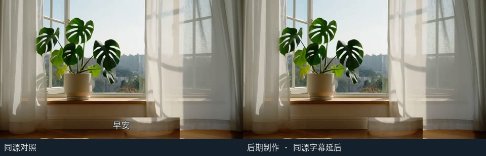
制作方法
从同一源片统一清除原字幕带；control仅2–4秒叠加“早安”，edited仅5–7秒叠加相同字形和位置。
左侧是对照，右侧是本次后期反例。第 95 行可分开试听。各组附看片位置和制作记录。
看底部中央。前4秒没有字幕，第5–7秒才出现“早安”。

从同一源片统一清除原字幕带；control仅2–4秒叠加“早安”，edited仅5–7秒叠加相同字形和位置。
看底部中央。人物说话时出现明确的“明天见”字幕。
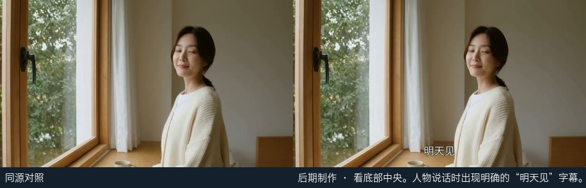
在无字幕正例上叠加白字黑描边字幕。
看握笔右手。第2–6秒食指与中指间的皮纹连续相连，放笔后恢复。
从同帧相邻手指提取皮纹，以非刚性横向拉伸和seamlessClone融合到指缝；未加入纯色图层。
看左后方长椅人物的袖口到手。第2–6秒手腕被纵向拉长，前景站立者正常。
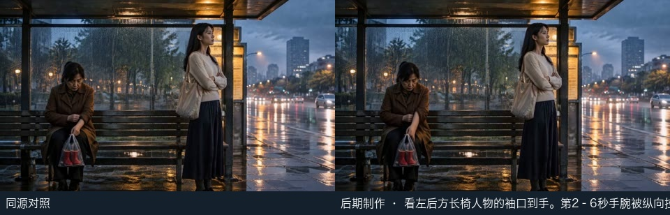
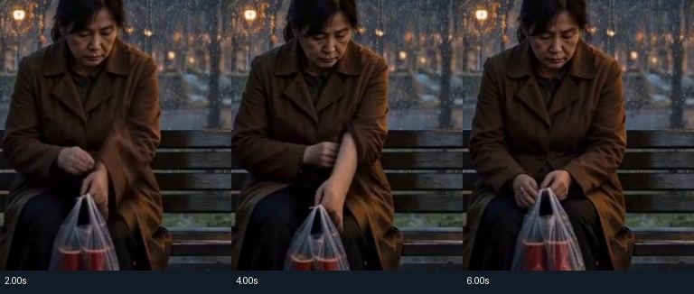
仅从同帧袖口/手腕窄条提取皮肤和布料纹理，纵向伸长并以椭圆羽化边缘融合；未使用矩形覆盖。
第 4 秒起看 BORN。个别字母的笔画会突然消失、重叠和串位。视频下半部将印字转正放大。
跟踪印字，按相邻帧的离散状态改变笔画拓扑。
看眨眼瞬间。左眼滑到鼻梁附近，约0.75秒后回位。
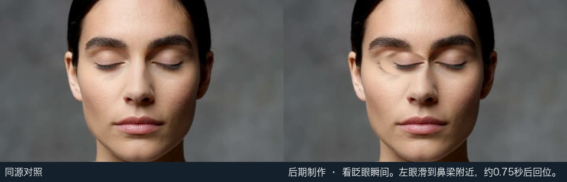
从同帧提取左眼局部，以羽化椭圆掩膜向鼻梁平移。
看翻掌中最上方两指。第4–4.5秒两指间皮纹连续，指缝消失，随后恢复。
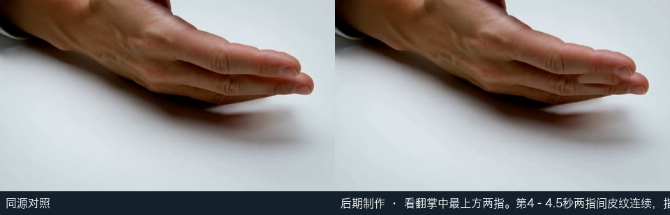
从同帧上方手指提取皮纹，以局部非刚性拉伸和seamlessClone融合到两指之间；未加入纯色图层。
看3秒切点。切前地毯刚离地，切后已高举，抬起过程被跳过。
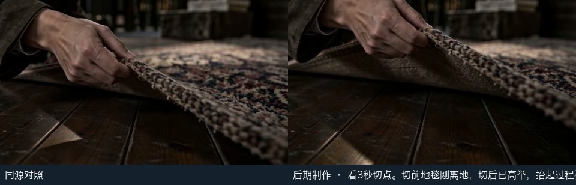
在3秒切点插入同源4.5秒的已抬高地毯画面并保持切后动作。
看4.0–4.45秒中间两枚钢球：反例两球中心距离小于一个直径，轮廓实际贯穿；每球仍有独立双细线。
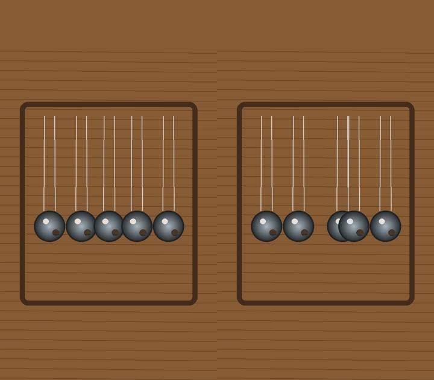
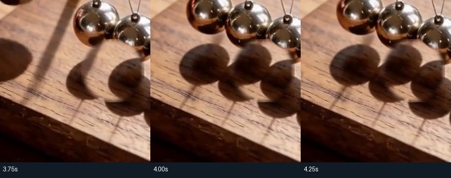
以程序化金属球、逐层高光/阴影和独立双悬线重绘五球装置。control保留正常弹碰；edited仅在4.0–4.45秒将中间球平移58px产生贯穿。
看第5–6秒头部。头沿原转向路线快速左右折返，肩和背景不动。
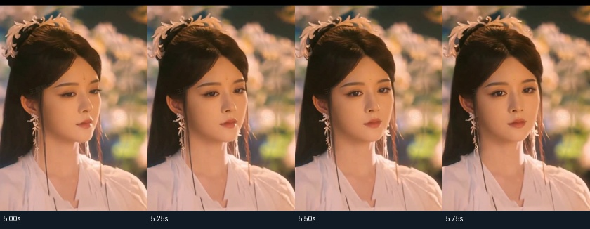
提取头部椭圆区域按6帧循环左右平移，肩部和背景保留原帧。
右侧在约 0.42–1.42 秒冻结 24 帧，波峰与窗光倒影一起停住，随后从当地继续运动。左右均取自原片 2–8 秒，展示版为 6 秒。
取 H3 正例第2–8秒同一段活跃水纹，成对输出6秒；校准片零基第10–33帧连续呈现同一画面，共24帧（约0.42–1.42秒），随后从该处继续波纹传播。
看床后方两侧家人。全段头肩和手势固定，前景医生仍在动作。
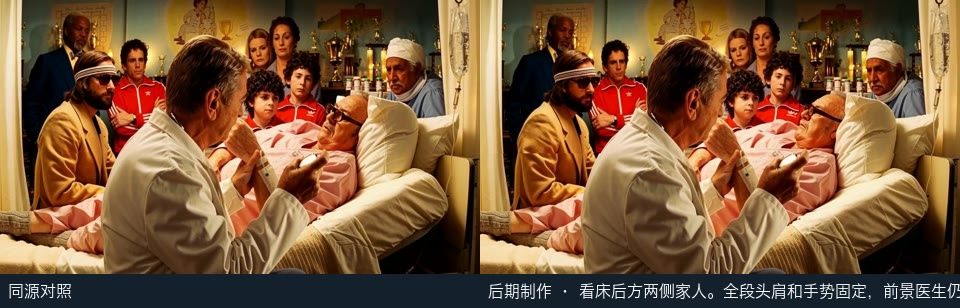
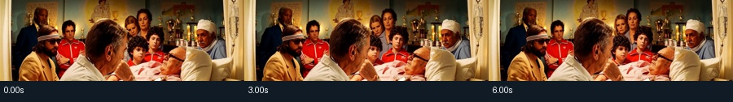
冻结远处家人所在的左右背景区域，保留中央近景人物和床边区域的源帧动作。
切镜前两边都有木椅。切后看读书人左侧门旁，右侧的扶背木椅消失，原位置仍可见。
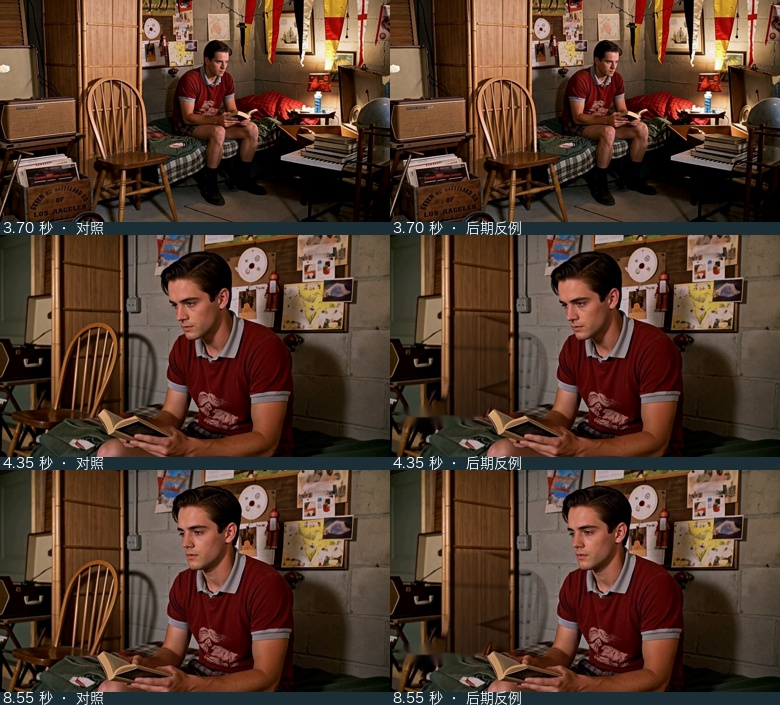
逐帧跟踪第二镜门板，用沿座椅轮廓的窄掩模清除椅背、座面、椅脚和部分投影，局部补回同帧门板和墙面。
右侧前 191 帧为地球仪，第 192 帧硬切到红杯，正常播放只闪约 42 毫秒。
正例解码为yuv420p后保留前191帧。仅用旧反例的第192帧替换末帧。视频以无损x264重编码，正例AAC音轨逐包复制。
右侧每 6 帧只更新一次画面。人物和墙纹同时停、同时跳，每秒只有 4 幅不同画面。
每6个输出帧共享组内第1帧。24 fps容器中每秒4幅不同画面，舞者、墙纹和机位同帧停、同帧跳。
第 6 秒起看右侧浅墙和帘布，细黑白点不断换位。窗光和织物运动照常。
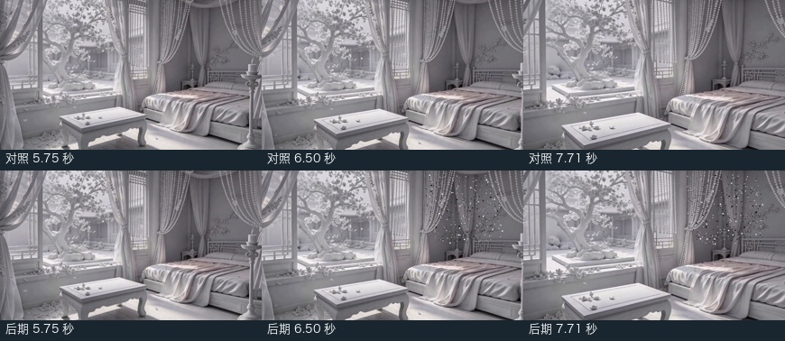
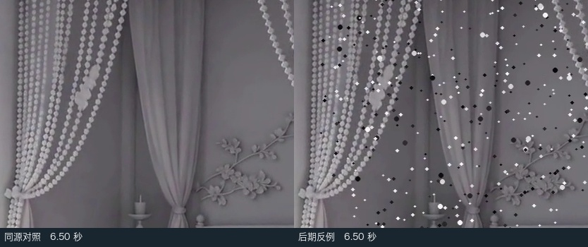
在选定的墙面和帘布区域叠加时空独立亮暗脉冲，点径约 2–5 个原图像素。
看镜中人物后方的灰墙和窗光边缘，第 6 秒起渐变出现成阶的色带。
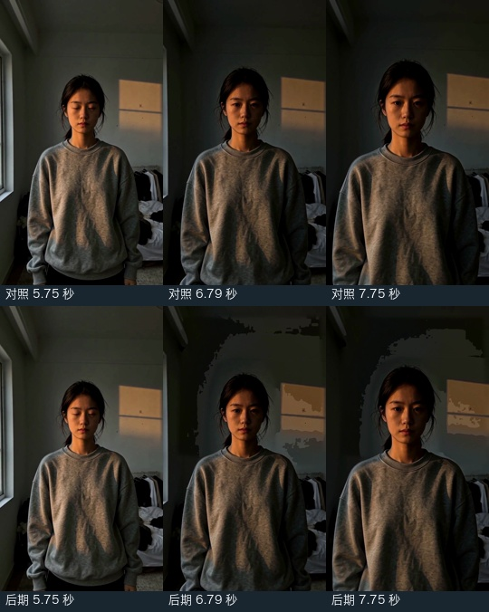
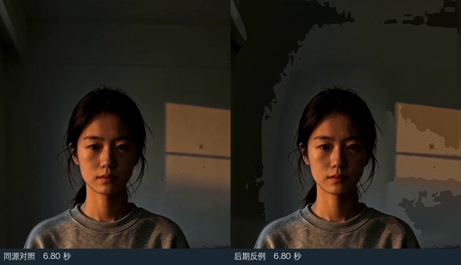
仅把镜内墙面低频亮度量化为离散台阶，保留人物、镜框和原亮暗分布。
看转盘和架格的宽高比。右侧同一个陶碗与人体会突然变宽、变窄。
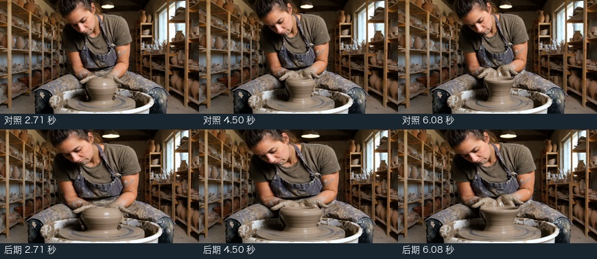
施加保持画幅边界的横向非等比映射，在不同时间段切换压扁与拉宽，音轨和帧序沿用原片。
站稳后看肩到胯与胯到脚的比例。右侧躯干变长、双腿变短，脚仍落在原来的地面位置。
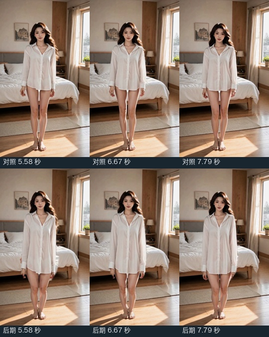
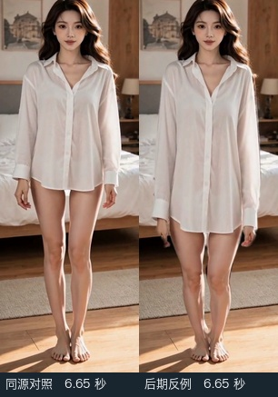
通过人物分割与局部纵向重采样固定头肩和脚底，把胯线下移，并补齐轮廓外露的少量背景。
第 3 秒光纹整片出现。右侧贴片不随装置透视转动，也覆盖了原本在它前面的手。
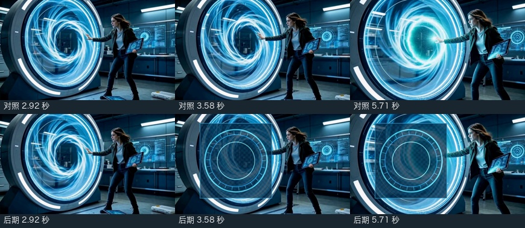
将同色系能量图层固定到屏幕坐标，保留清晰的矩形边界和错误的遮挡顺序。
看泳池水、绿植和暖色地砖。右侧多个色相同时接近荧光，曝光与镜头仍可对照。
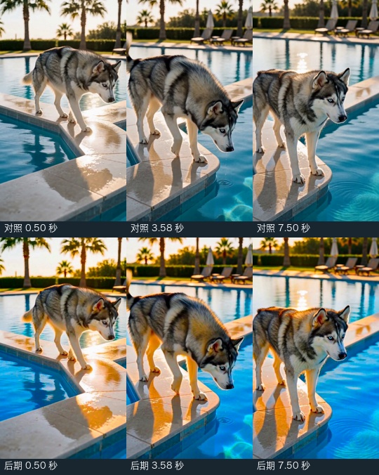
在 Lab 中对中高色度区域增强色度，保持固定亮度通道，灰白区域保留。
看耳环、发际和手指边缘，右侧出现硬白晕与黑色描边。
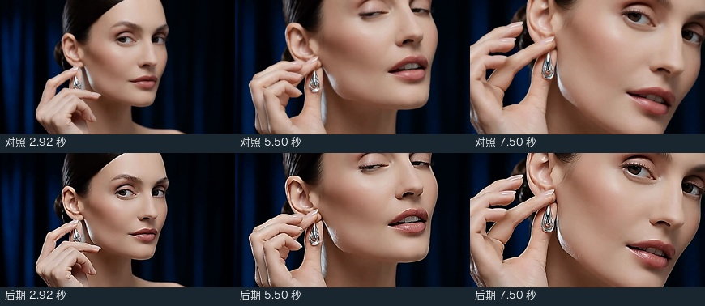
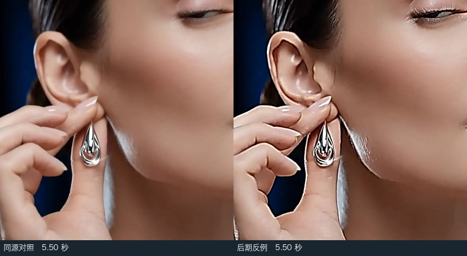
提高亮度边缘的高频过冲量并限制在边缘带，保留帧序、整体曝光和色彩。
看颧骨和面颊。右侧毛孔和细纹被抹去，高光与眼、唇及发丝仍可对照。
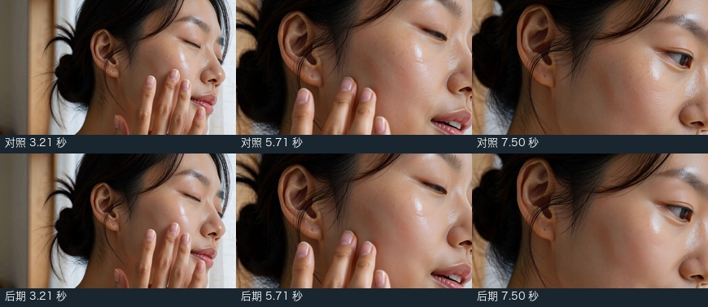
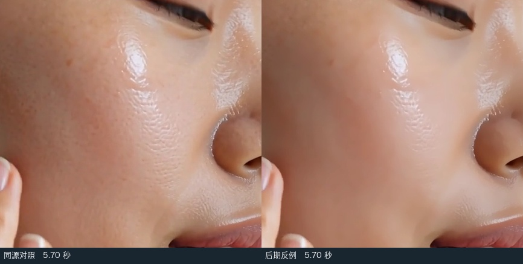
跟踪脸部肤色区，在轮廓之外做保边微纹理平滑，保持大尺度明暗和高光。
看猫的受光和地毯交界。右侧猫亮暗方向与房间不协调，接触影变浅，轮廓呈硬贴边。
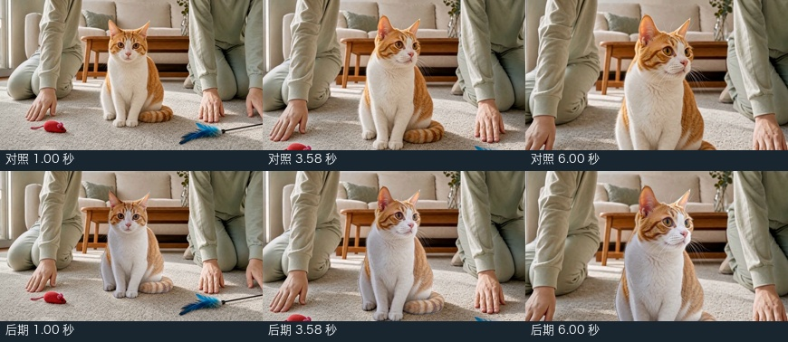
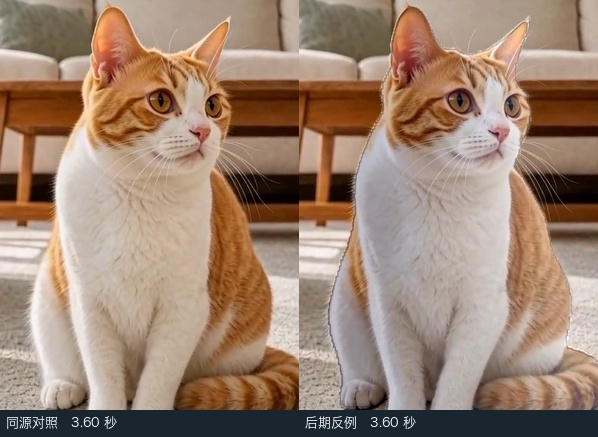
按猫实例分割，重新映射左右区域照度，减少足下接触阴影，并用窄轮廓制造贴合失败。
看鼻侧、脸颊和颈部。右侧大尺度的明暗塑形被压平，眼鼻边缘及原有纹理仍保留。
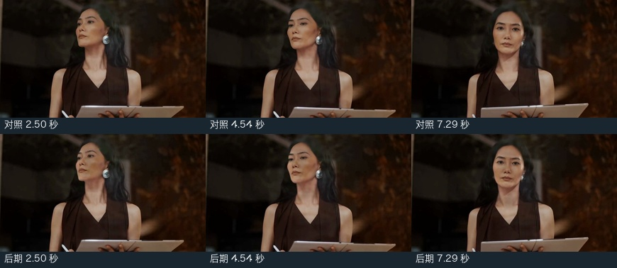
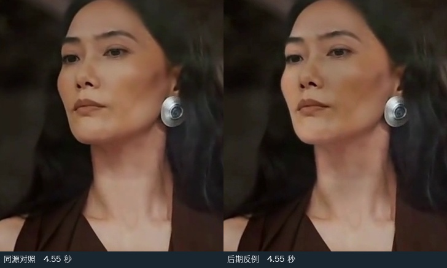
跟踪人物脸与颈部，只压缩皮肤的低频亮度层，保留高频纹理和背景。
看肤色、木材和深色西服，右侧共同偏灰、暗部抬高，整体层次变薄。
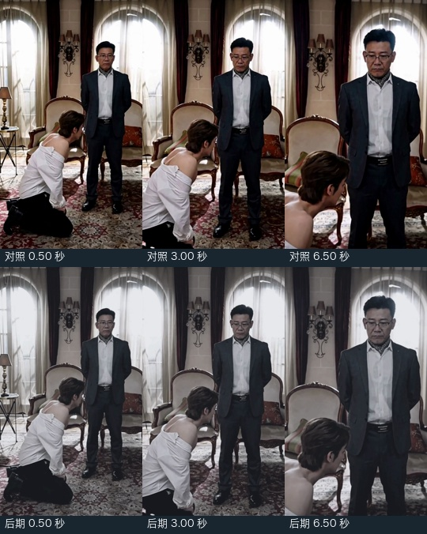
对整片施加灰雾色调，抬黑位、压局部对比，并降低色度，保持原片构图和切点。
右侧 7.50–8.50 秒只有错位、重复的图块，人物与能量球都无法辨认，第 205 帧恢复。
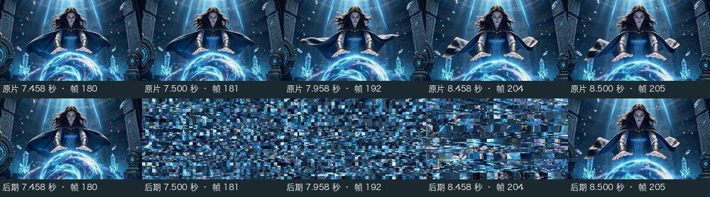
将同一张画面上的局部块及近期图块打乱并替换整屏。
试听1–3秒左侧A与4–6秒右侧B：对照为A高音区、B低音区；反例为两者互换。
TTS替代题库录音声纹，仅提供可试听且可互换的两位系统中文speaker；原画面口型未重绘，可能不完全吻合。
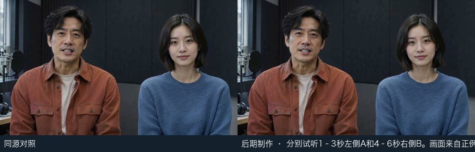
两名不同macOS中文TTS（Tingting=校准参考1、Meijia降音区=校准参考2）分别读同台词；控制A→1/B→2，反例A→2/B→1。视频流均从r095_good无重编码复制。
看门边蓝衣者的脸和手，右侧只将这位演员肤色调深偏黄。中间沙发人物和白墙是对照锚点。
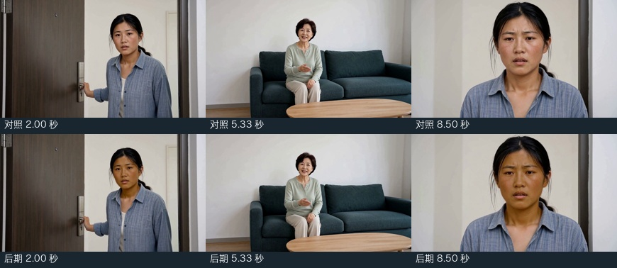
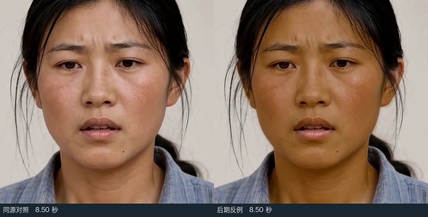
仅处理进门者所在的镜头，分离脸部和手部肤色，以 Lab 改变亮度与黄色分量，其余像素沿用原帧。
看右侧角色相对椅背和桌面的比例。她全程更高、更宽，脚底仍落在地面。
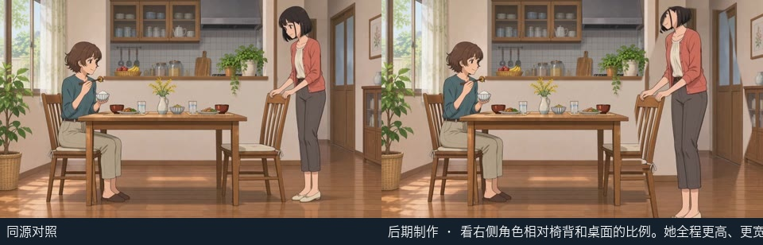
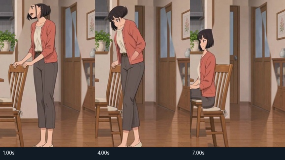
用手工多边形掩膜放大右侧二维角色约20%，锁定地面锚点和桌椅。
看2–6秒唯一的手和棋子：对照走半圆，反例严格直线；两边同起点、终点和入碟位置。
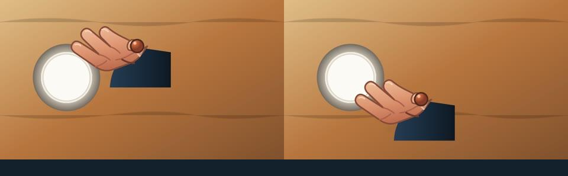
使用原视频参考提供的table/hand/token透明源层逐帧二维重渲；手始终单一，棋子固定贴手。仅路径函数不同。
用杯柄确认两边的杯子都朝右。对照杯身左亮、影子向右；反例右亮、影子向左。
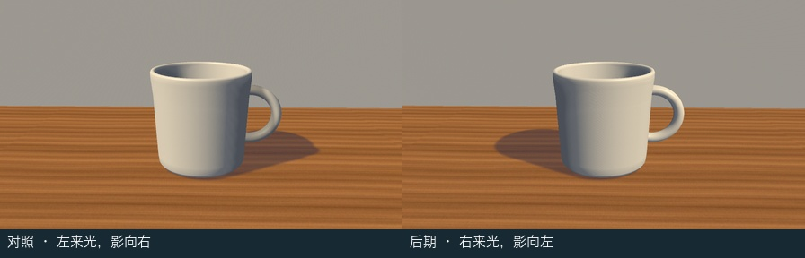
根据题库白瓷杯、木桌、灰墙的参考结构重建一个三维场景。两侧共用杯体、把手、木纹与推进轨迹，控制变量是主光方位。原 H3 正例音轨逐包复用。